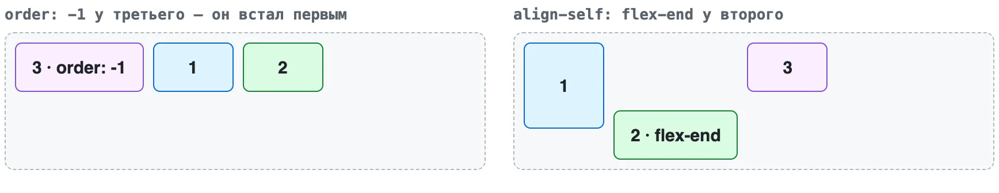
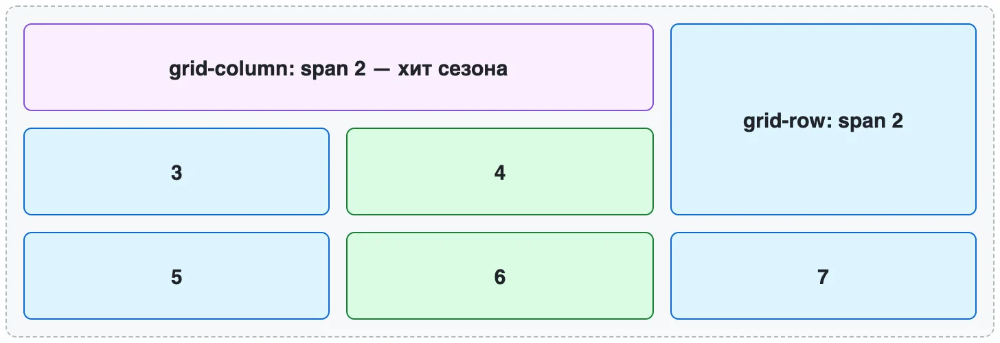
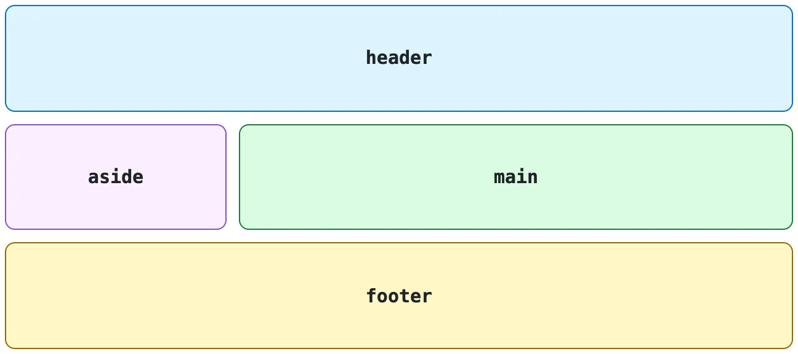
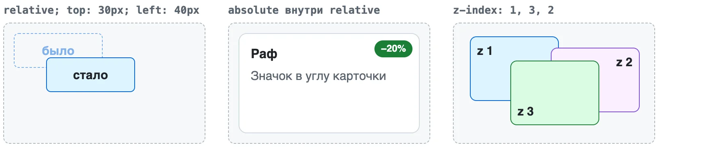
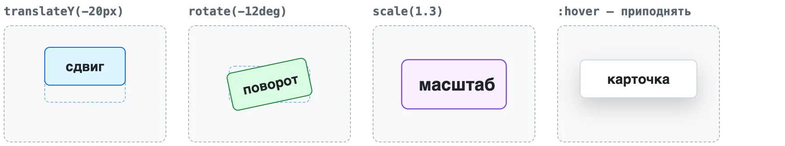

Модуль 1. HTML и CSS. Урок 7
Flexbox и Grid
Раскладка элементов на странице
Фронтенд с нуля
Две раскладки на все случаи: Flexbox — одна линия, Grid — сетка
Плюс position — для того, что лежит поверх
Часть 1
Поток и Flexbox
Элементы в ряд и по центру
Поток документа

display
| Значение | Что делает |
|---|---|
block |
новая строка, вся ширина |
inline |
в строку с текстом |
none |
исчезает |
flex |
дети в ряд |
grid |
дети в сетку |
Flexbox: шапка
.header {
display: flex;
justify-content: space-between;
align-items: center;
}display: flex — родителю, двигаются его дети
Две оси

justify-content

align-items

Точно по центру
.screen {
display: flex;
justify-content: center;
align-items: center;
}Промежутки и размеры
- gap: 16px промежутки между элементами
- flex-wrap: wrap перенос на новую строку
- flex: 1 занять свободное место
- margin-left: auto отодвинуть вправо
Один элемент ряда

order — место в ряду, align-self — своё выравнивание
Часть 2
Grid
Строки и колонки сразу
Grid: колонки

Единица fr
- 1fr одна доля свободного места
- 1fr 2fr вторая колонка вдвое шире
- 3 × 1fr три равные колонки:
repeat(3, 1fr)
Адаптивная сетка
.catalog {
display: grid;
grid-template-columns: repeat(auto-fill, minmax(220px, 1fr));
gap: 24px;
}Колонок столько, сколько влезет
Карточка на две колонки

grid-column: span 2 · grid-row: span 2
Макет страницы

grid-template-areas:
"header header"
"aside main"
"footer footer";Flexbox или Grid
| Задача | Раскладка |
|---|---|
| Шапка, меню, кнопка с иконкой | Flexbox |
| Каталог, галерея | Grid |
| Макет страницы | Grid |
| По центру | любая |
Часть 3
Позиционирование
Что лежит поверх остальных
Пять значений position
| Значение | Когда |
|---|---|
static |
по умолчанию, обычный поток |
relative |
точка отсчёта для absolute |
absolute |
значок в углу карточки |
fixed |
кнопка «Наверх», чат |
sticky |
шапка, которая прилипает |
relative, absolute, z-index

Значок в углу
.card { position: relative; }
.badge { position: absolute; top: 8px; right: 8px; }Без relative значок улетит в угол страницы
Шапка, которая прилипает
.header {
position: sticky;
top: 0;
z-index: 10;
background: #fff;
}Часть 4
Движение
Плавность и анимация
transform

Двигает элемент, не сдвигая соседей
transition
.card { transition: transform 0.2s, box-shadow 0.2s; }
.card:hover { transform: translateY(-6px); }В обычном состоянии — анимация туда и обратно
@keyframes
@keyframes pulse {
from { transform: scale(1); }
to { transform: scale(1.08); }
}
.btn-order { animation: pulse 1s infinite alternate; }Анимация — для одной-двух вещей на странице
И prefers-reduced-motion для тех, кто её выключил
Частые ошибки
- flex не тому родителю, а не детям
- justify и align вдоль и поперёк оси
- margin вместо gap лишние отступы у краёв
- Всё на absolute наезжает на другом экране
Воркшоп: шапка, каталог и макет
- Шапка Flexbox и значок flex в DevTools
- Каталог Grid, span и auto-fill
- Макет grid-template-areas
- Поверх значок, sticky и плавный hover
Домашнее задание
- Шапка сайта
- Каталог на Grid
- Макет страницы
- Со звёздочкой: Flexbox Froggy и Grid Garden